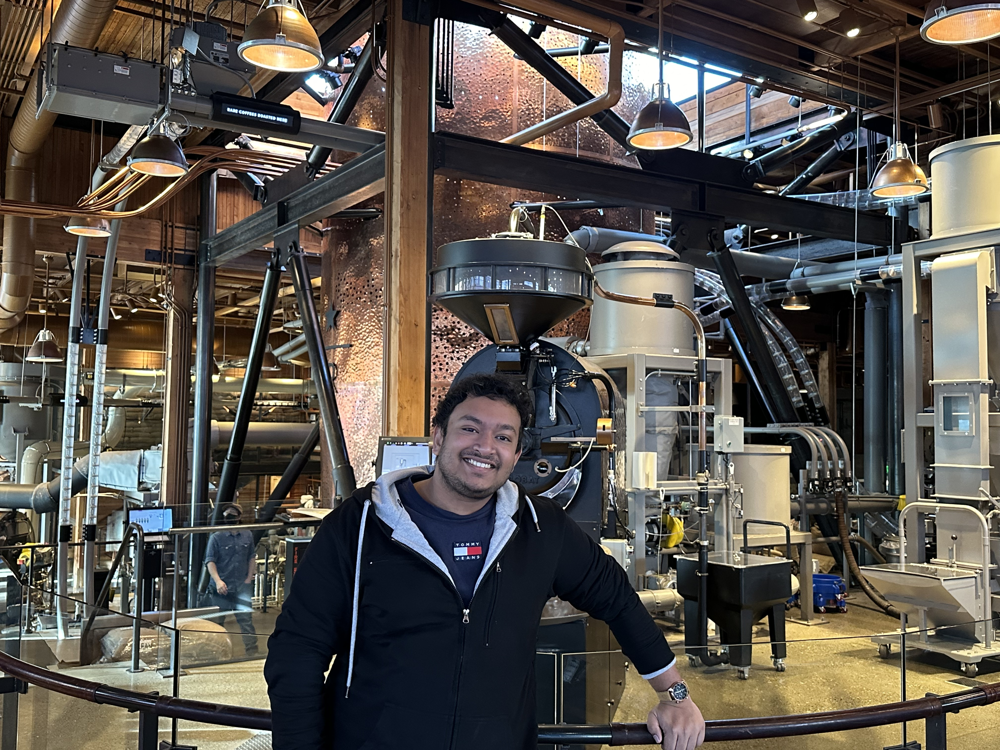

sambuddha.nath@gmail.com
Sambuddha Nath

Software Developer Engineer at Amazon Seattle, Washington
Software Developer Engineer at Amazon Seattle, Washington
I pursued Mathematics and Computing from one of the prestigious Institute of the country IIT. My combined knowledge of Mathematics and Computer Science has always helped me think analytically and pragmatically.
My hunger to understand and learn new domains has allowed me to explore and connect various fields.
Looking for profiles in Software Engineer, where I will get to explore and get hands on new technologies, complex projects and will be able to take skeletal decisions which will directly contribute to the development of the company.
Programming Languages : C/C++, Java, Python, JavaScript, Typescript
Web Technology : ReactJS, Graphql, NodeJS, Puppeteer
Backend Frameworks Hands on : Java Spring-boot, Django
Cloud Services : AWS CDK + Console(Proficient)
Databases Hands on : SQL Server, MYSQL, PostgreSQL, MongoDB, Dynamodb, NOSQL
Data Streaming Technology : Apache Kafka
ETL Tools : Informatica
Mobile Development : Android, IOS
AWS Technologies : Cloudformation, Cloudwatch (Logs, Metric, Alarms, Event Bridge), Cloudtrail, S3, DynamoDb, Lambda, SQS, KMS, EC2, Rounte53, Certificate Manager
Project Lumos Sense – Detection based Security for Amazon’s Payment System (Python, Typescript)
• Developed security Detections for auto detecting various security risks in different teams.
• Fixed around 150 different security risks in the product suggested my Amazon Global Security.
• Reducing the False positives by 95% generated by different detections (Highlight of a Quarterly report).
• Fixed more than 900 tickets (including customer requests) during on-calls
Project RedZone (Ownership) – Automated Reasoning based Security Detection
• Designing and Created the Development stage for developers to run the application in personal account.
• Created new API Gateway and implemented AuthN and AuthZ with the product.
• Initiatives for improving team’s coding process. Like creating CR templates, testing mechanism etc.
Project CPQ – Configure Price Quote (ReactJS, Graphql, Java Spring-Boot Microservices):
• Architectural design, POC, releasing first MVP, giving KT’s and mentoring new members.
• Designed optimized and scalable Data Models for the application improving data storage by 60% and querying performance by 30%.
• (Ownership)Kafka Cluster based Architecture Design, POC and its integration with the application using Spring-Boot microservice and syncing data to Salesforce using Rest-api related FE and BE micro-services in spring-boot.
• (Ownership)Writing and maintaining Informatica mappings for ETLs to migrate data (approx. 20Gb per mapping = 200GB in total) from “Salesforce” to AWS Postgres.
Project1 (Sizer – Internal Tool) (ReactJS, ReduxJS, Java Spring-boot Microservices)
• Successfully generated frontend and backend services and built Rest-api handling over 50,000 users.
• Automating and optimizing Postgres database queries improving dB query performance by 40%.
Project2 (CPQ – Configure Price Quote) (ReactJS, Graphql, Java Spring-Boot Microservices):
• Data Model Designing, Architectural Structuring the project and writing FE and BE services.
• Puppeteer integration tests to automate QA and monitoring customer facing web-app (code coverage 90%).
• Sales Distribution Management, Warehouse Distribution Management and in-depth sales velocities and forming complex SQL queries to analyse live running data of around 500GB.
• Created a Django based web portal for performing SWOT analysis, with HCL’s proprietary algorithm on live data.
• Spring-Boot based microservices and Jenkins+Docker deployment: ASU 2022
• Customer Feedback/Case Filing Chrome Extension, Integrated with Okta, Jira, Salesforce and Tableau, Location: Nutanix (Hackathon February 2020)
• Android Based Student Attendance APP using Android APK, Location: IIT Dhanbad
• Time Table Management Portal for Professors allowing them to synchronize the class timings automatically based on availability using HTML/CSS and PHP, Location: IIT Dhanbad
Email:
Phone: +1 650 495 4920
Leetcode: https://leetcode.com/prosam999/
Linkedin: https://www.linkedin.com/in/sambuddha-nath-812964104/
Github: https://github.com/prosm056